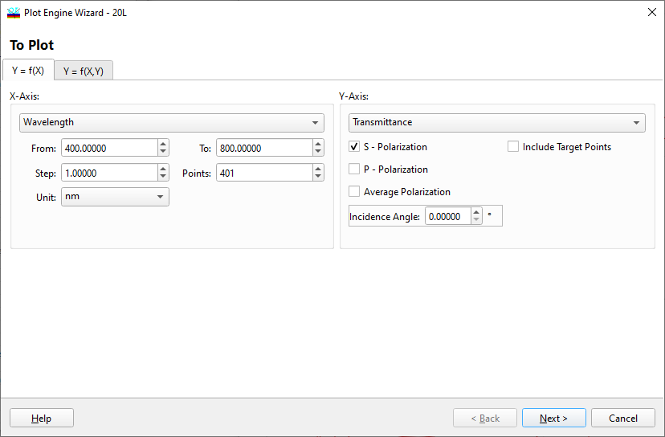

Plot Engine Contents
Plot Engine Contents
Navigation: OptiLayer Menu Commands > Analysis Menu > Plot Engine >
Plot Engine Contents
` <idh_plot_engine.html>`__ ` <idh_plot_engine.html>`__ ` <idh_plot_engine_2.html>`__
The first step in setting up the OptiLayer Plot Engine Setup is to select which data will be plotted and how.

The list of arguments includes Wavelength, Angle of Incidence, and a number of other parameters appearing in the combo box under the header X Axis. The same set of arguments is provided for the Y argument if you select a Z = f(X,Y) mode. In the same frame, the range for the argument (From…To), the number of points (Points), and the argument increment between points (Step) are specified.
A characteristic to be plotted is selected from a combo box under the header Y Axis (or Z Axis in the case of 2D plots). The list of characteristics includes Transmittance, Reflectance, Absorptance, Ellipsometric angles, and all other characteristics calculated by OptiLayer. In the additional checkboxes of this frame, you can set the state of polarization (S, P, or Averaged). Moreover, if none of the arguments is Wavelength or Angle, the wavelength and angle can be set in the additional edit boxes. For example, in the picture above, the argument is Wavelength. Hence, the edit box to select the Angle of Incidence is provided. If you select Angle as an argument, this box will be replaced with a box to select Wavelength. If any other parameter is selected as an argument, then both Wavelength and Angle of Incidence boxes will appear in the dialog.
If the Color Characteristics option is selected, color characteristics of different color spaces can also be investigated. After selecting appropriate characteristics and arguments, press the Next button to start the next stage of setting plotting parameters, or the Cancel button to abort the Plot Engine setup.
See also: